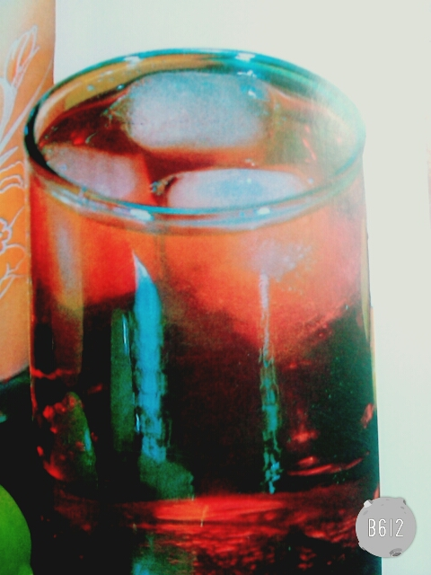
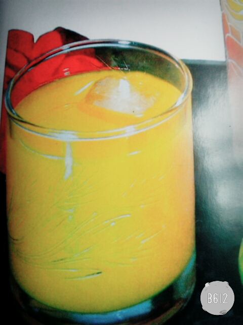

bebidas naturales
-

aGUA DE TAMARINDO
INGRDIENTES: 2LT DE AGUA, 200GRS DE AGUA,AZUCAR AL GUSTO Y HIELO AL GUSTOQUITE LA CASCARA DE LOS TAMARINDO Y HIERVALOS CON 2 TAZAS DE AGUA, AFUEGO LENTO DURANTE 15 MIN DEJE ENFIAR Y MACHAQUELOS PARA QUE SUELTE LA PULPA.CUELE LA MEZCLA Y GREGUE AL RESTO DEL AGUA JUNTO CON EL AZUCAR, REVUELVA BIEN. FINALMENTE AGREGUE HIELO AL GUSTO.
-

agua de naranja
ingredientes: 2lts de agua,4 naranja(jugo),azucar al gusto, hielo al gustovierta azucar al agua y mezcle bien. enseguida el jugo de narnaja. colado, el hielo y revuelva bien.